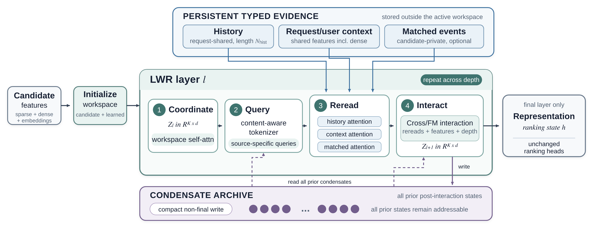
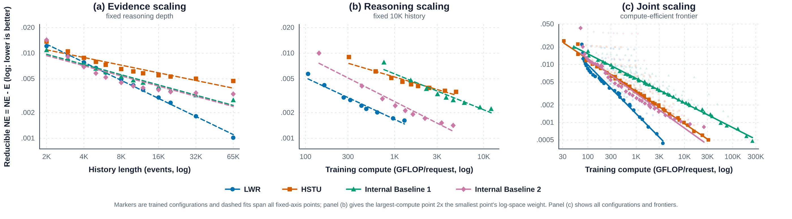

Contents · 8 sections
1What problem does it solve?2The structure: three evidence banks, a scratchpad, and an archive3Why reread at every layer?4Why also keep an archive?5Results6Limitations as I see them7How a recommendation team could try it8VerdictSHARE
This Meta paper gives long-sequence ranking a new structure in which reading more history and stacking more layers become two separately tunable knobs: with 10K history events, its NE beats HSTU by 0.19% while using 69.6% less forward compute per request. Current models tie the two together. A sequence encoder pays for every extra event in every layer, while models that first select relevant events select only once, so later layers never see what was left out. The proposed LWR (Latent Workspace Ranker) keeps the history in storage that every layer can query. Each candidate item carries a small fixed set of vectors, a kind of scratchpad: some are produced from the candidate's own features, and the rest are learned in training and shared by all candidates. Only this scratchpad moves up through the layers. At each layer, the scratchpad's current content produces a few queries that run cross-attention over the full history, and the results interact with ranking features to update the scratchpad. Longer history only makes each read longer, and more layers do not enlarge the scratchpad. Reading more and stacking deeper can be scaled separately.
Teams working on long-sequence ranking should read this, because it gives a structural answer: keep the history outside the model where it can be queried at any time, and let only a fixed-size candidate state pass through the layers. Adding history and adding depth then become two separate knobs. Be clear about what it saves. It removes the per-layer state that grows with history, but reading the history is not free: every layer still runs cross-attention over the full history, so read cost grows linearly with history length and repeats with depth. All evidence is offline NE on two billion-scale ranking surfaces at Meta.
What problem does it solve?
Picture a user with 10,000 past events and a candidate pair of running shoes (illustrative). Early layers might match the shoes to her long-standing interest in sports. Later layers should perhaps look at what she has done in the last few days, such as viewing marathon sign-ups and energy gels. The paper's point is that the useful history changes as the model processes the candidate: an early representation matches the candidate to a stable preference, while a later one leans on the current session.
The two existing families each get stuck somewhere:
| Approach (illustrative) | How history enters the model | Cost of more history | Cost of more depth |
|---|---|---|---|
| Sequence encoder (e.g. HSTU) | every event has its own representation, updated in every layer | every layer handles the extra events | every extra layer recomputes all events |
| Select first, then model (DIN, SIM family) | relevant events are selected or pooled for the candidate, then feature interaction runs | only affects the selection step | later layers only see what was selected; missed events cannot come back |
| LWR | history stays in external storage and is reread per layer | only makes each read longer | scratchpad size is fixed and every layer can reread the raw history |
In the running-shoe example, a select-first model that picks 100 sports events in its first step might miss the marathon sign-ups, and later layers cannot see them. A sequence encoder sees everything, but the representations of all 10,000 events must be updated in every layer.
The structure: three evidence banks, a scratchpad, and an archive

First, the pieces.
- Evidence banks (the paper's typed evidence banks): raw information stored separately by source, three in total. The history bank is the user's event sequence for this request, shared by all candidates in the request. The context bank holds request and user features, including dense features, and is also shared. The matched-event bank holds past events matched to this candidate, one per candidate, and is optional; the paper describes it only at this level, as candidate-private and optional, leaving the selection rule to the surface.
- Scratchpad (the paper's workspace): K vectors per candidate. Some are produced from candidate features; the others are learned and identical for every candidate, adding capacity that does not depend on content. Only the scratchpad passes between layers.
- Archive (the paper's condensate archive): every layer except the last compresses its scratchpad into a few vectors and appends them, recording how that layer combined the candidate, the evidence it read, and the ranking features.
Each layer runs four steps:
| Step | Input | What it does | Output |
|---|---|---|---|
| Coordinate | current scratchpad | self-attention among the K vectors of one candidate | scratchpad after exchanging information |
| Query | scratchpad, archive from all earlier layers, a few learned vectors of this layer | produces queries, split by source, a fixed number per bank | one query set per bank |
| Reread | each query set and its bank | multi-head cross-attention with the bank's vectors as both keys and values, reading from the full bank weighted by relevance | one response set per bank |
| Interact | scratchpad, responses, archive, dense features | the first three are joined into one set of vectors and passed, with the dense features, to an explicit Cross/FM-style feature-crossing block | next scratchpad, still K vectors |
In the paper the three banks are written directly as sets of vectors for attention to read. The paper does not say what encoding produces these vectors or whether they pass through a sequence encoder before being read; it only mentions "packed history" and "request and user features, including dense features". What is certain is that every layer reads the same set of vectors, unchanged across layers. The banks are not updated across layers, so every layer reads the same original evidence. The history and context banks are shared by the candidates of one request, while the matched-event bank stays private to each candidate. For Interact, the paper gives the formula: the input is the joined set of vectors plus the dense features, the output is a new scratchpad of K vectors, and the paper does not say how the crossing block turns its result back into K vectors, giving only the Cross/FM family and the input and output sizes. The final layer outputs a fixed-width vector to the existing PLE multi-task module and its task heads. The key division of labor: the banks decide how much can be read, the scratchpad decides how much each layer carries, and neither size affects the other.
Why reread at every layer?
If history were read only once in the first layer, LWR would collapse into a select-first model, and later layers would only have what the first read returned. Rereading matters because the queries change. The scratchpad and archive change at every layer, and so do the queries built from them. An early layer can ask a broad question, such as what sports this user likes overall. A later layer, after a round of feature interaction, can ask a follow-up specific to the candidate, such as whether there were running-related events in the last few days (illustrative).
How are queries built? The input is a set of vectors: the scratchpad, the earlier archive, and a few learned vectors of this layer. The generator combines them into one set of queries and then splits it by source, giving each bank a fixed number (24 per bank in the experiments). The combination has two paths that are added together. One is a fixed combination: each query is a weighted sum of the input vectors, with weights learned in training and the same for every candidate. The other combines them in a way that depends on their content, and its output projection starts at zero; the paper does not say how this path computes its combination weights from the content, giving only its role and this initialization. So at the start of training the queries come entirely from the fixed path, and the content-dependent path receives gradients from the first update and is learned gradually.
There is also an engineering point. The history and context banks are shared across the whole request, so all candidates in a request read the same copy through grouped offsets instead of each getting its own. The matched-event bank is private to each candidate, and offsets ensure a candidate cannot read another candidate's private bank.
Why also keep an archive?
The scratchpad has only K vectors, and each layer's interaction overwrites it. If a later layer needs what the second layer concluded, the scratchpad alone cannot recover it. The archive exists for this. Every non-final layer uses a learned compressor to squeeze its post-interaction scratchpad into q_c vectors and appends them. The paper does not say what the compressor looks like inside, giving only its input and output: K vectors in, q_c vectors out. It stores that layer's conclusions, not a copy of the raw history.
The model in the paper's experiments has 5 layers, and each non-final layer writes 4 archive vectors. So layer 0 reads no archive, layer 1 reads 4, and the last layer reads the 16 written by the 4 layers before it. This shows that the archive grows slowly with depth, and stays far smaller than carrying representations of 10,000 events upward.
The paper gives the size of each candidate's carried state as , where is the number of scratchpad vectors, the number of layers, the archive vectors written per layer, and the vector width. History length does not appear. It shows up only in the read step: a bank of length with queries costs attention work per layer.
Results
Each model trains on three days of online data, 30 to 50 billion examples, and is evaluated on the following day, so evaluation data always comes after training data. Lower NE is better. The paper reports a gain as the difference between two NE values times 100: for example, 0.6841 minus 0.6826 is 0.0015, reported as 0.15%. Gains above 0.03% count as significant.
First, the overall comparison on two production surfaces, both at 3,000 history events. Surface 2 compares against HSTU; Surface 1 compares against an existing internal baseline and reports differences relative to it:
| Surface and metric | Reference | LWR | Difference |
|---|---|---|---|
| Surface 2 task A eval NE | 0.6841 | 0.6826 | −0.15% |
| Surface 2 task B eval NE | 0.6276 | 0.6251 | −0.25% |
| Surface 1 global NE diff | 0 | −0.08% | −0.08% |
| Surface 1 regional NE diff | 0 | −0.09% | −0.09% |
Both surfaces clear the significance line. This shows LWR already holds up at ordinary history lengths, which is what makes the scaling experiments meaningful.

When reading more at fixed depth, LWR beats HSTU in NE by 0.11%, 0.12%, and 0.19% at 3K, 5K, and 10K history, while cutting forward compute per request by 19.6%, 48.2%, and 69.6%. This shows that the longer the history, the more LWR gains from not passing history through every layer. At 10K, another internal model (Internal Baseline 2 in the paper) is only 0.01% better than LWR, below the significance line, but needs 136.28 GFLOP per request against LWR's 52.69. Across the full 2K to 65K range, LWR trails Internal Baseline 1 at short histories and ranks first among the four architectures from 12K on.
When stacking deeper, history is fixed at 10,240 events, and depth is reported as a multiple of the scaling runs' base depth, from 0.5x to 8x in 9 steps; the paper gives only the multiples, and each run is plotted at its measured total training compute. All four architectures improve steadily with depth, and LWR improves by 0.41% in total. This shows that with the same history, a deeper scratchpad really does extract more from it. At 8x depth, Internal Baseline 2 is 0.02% better than LWR, again below the significance line, but uses 3.5 times the training compute.
When compute can go to either axis, the paper takes the frontier from each architecture's 117 configurations and fits a power law of NE against compute. LWR's exponent is 0.845, against 0.558 for HSTU and 0.424 and 0.599 for the two internal baselines. A larger exponent means extra compute buys NE faster. This shows that within the evaluated configurations, along the most compute-efficient frontier, LWR's NE closes the gap to its own fitted floor fastest. Because each architecture's floor is fitted separately, the exponent compares speed of decline and should not be read as which model has the lowest NE at the same budget.
Limitations as I see them
First, the savings are mainly in state, not in reading. The paper itself notes that read work still grows with history length and repeats with depth. The forward-compute saving is only 19.6% at 3K history and reaches 69.6% at 10K, so surfaces with short histories gain less.
Second, two of the comparisons are anonymous internal baselines, and the Surface 1 reference is only described as an existing baseline, which makes it hard for outside readers to relate them to public methods. At 10K history and at 8x depth, Internal Baseline 2 matches LWR in NE, so LWR's edge there is mostly in compute (136.28 versus 52.69 GFLOP).
Third, the experiments only compare whole architectures. How much the archive, the learned scratchpad vectors, and the content-dependent query path each contribute is unknown. All results are offline NE.
How a recommendation team could try it
- Find a surface where an existing long-sequence ranker is already limited by compute. Fix depth, lengthen history, and record how NE and compute change, to confirm that the bottleneck really is processing the full history in every layer.
- Build a minimal version: two or three scratchpad layers, each running one cross-attention over the history bank, with no archive yet. Compare NE and forward compute against the current model at the same history length.
- If it helps, add the archive and the matched-event bank one at a time and measure each increment, filling in the breakdown the experiments do not provide.
- Finally sweep history length and depth together, draw your own compute–NE frontier, and decide whether the budget should go to more history or more layers.
Verdict
The key lesson: in long-sequence ranking, the history a model can read and the state each layer carries can be separated, and once they are, each scaling direction has its own cost.
| Dimension | Assessment |
|---|---|
| Importance of the problem | High. Long histories and deep models multiply each other's compute, a real bottleneck in long-sequence ranking |
| Novelty | Medium-high. External memory and repeated reads have precedents; the contribution is combining them in a ranker and separating the two scaling directions |
| Evidence | Medium-high. Two billion-scale surfaces plus scaling runs over 468 configurations; no component ablation, all offline |
| Engineering cost | Medium. Requires model changes, but banks are shared within a request and state size does not depend on history length |
| Worth trying? | Teams with histories beyond a few thousand events that are already limited by compute should run an offline comparison |
How did this read for you?
Hoot made a note. Thanks for the feedback.
One tap, no sign-in; tap again to undo. Only anonymous counts are kept, never who you are.
Discussion
Add experiment details, reproduction notes or a different take. Requires a GitHub sign-in.
Loading the discussion…